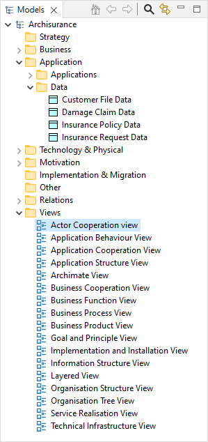

An ArchiMate model consists of a number of ArchiMate concepts belonging to different "layers" - the "Business" layer, the "Application" layer and the "Technology" layer. Each ArchiMate concept belongs to one of these layers. For example, a "Business Object" belongs to the "Business" layer and an "Application Component" belongs to the Application layer.
Each concept in the model can connect to one or more other concepts via one or more relationships (connections) according to the rules of ArchiMate.
It is beyond the scope of this guide to explain these concepts and their relationships. For more information refer to the ArchiMate Specification)
An ArchiMate model consists of configurations of these concepts connected to each other via the various relationships. An ArchiMate model is represented in Archi in the "Models" window as a tree structure organised into folders:
The Model Tree window showing an example model
Each ArchiMate concept is placed into its appropriate folder in the Model Tree.